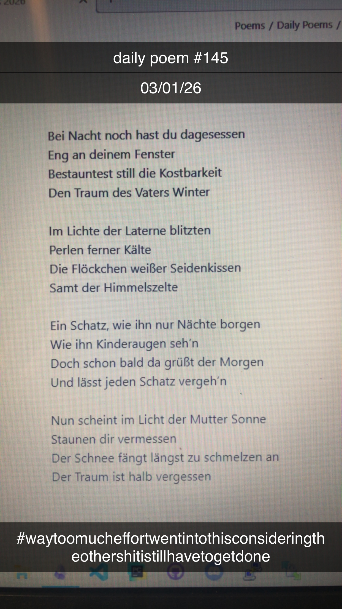

Bei Nacht noch hast du dagesessen
Bei Nacht noch hast du dagesessen
Eng an deinem Fenster
Bestauntest still die Kostbarkeit
Den Traum des Vaters Winter
Im Lichte der Laterne blitzten
Perlen ferner Kälte
Die Flöckchen weißer Seidenkissen
Samt der Himmelszelte
Ein Schatz, wie ihn nur Nächte borgen
Wie ihn Kinderaugen seh’n –
Doch bald schon da grüßt der Morgen
Und lässt jeden Schatz vergeh’n
Nun scheint im Licht der Mutter Sonne
Das Staunen dir vermessen
Der Schnee fängt längst zu schmelzen an
Der Traum ist halb vergessen
